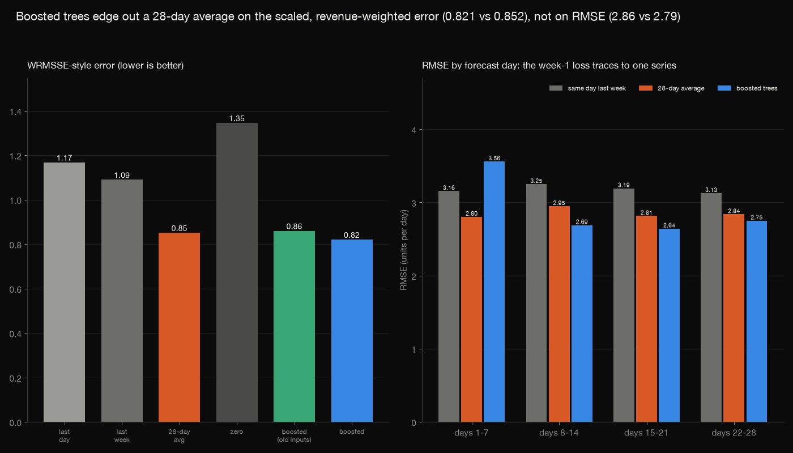
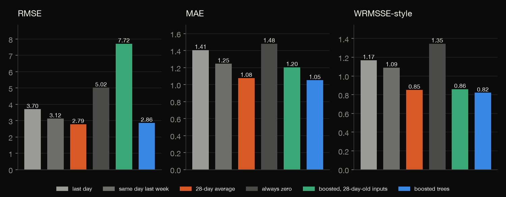
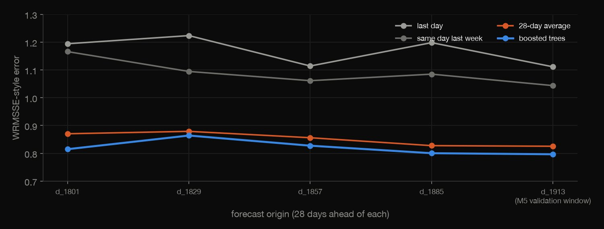
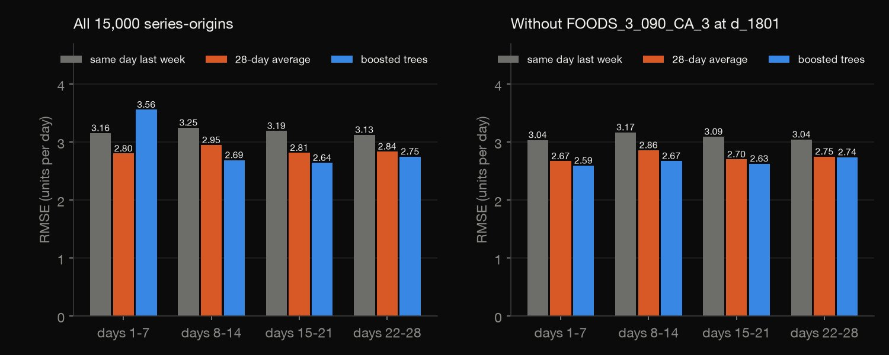
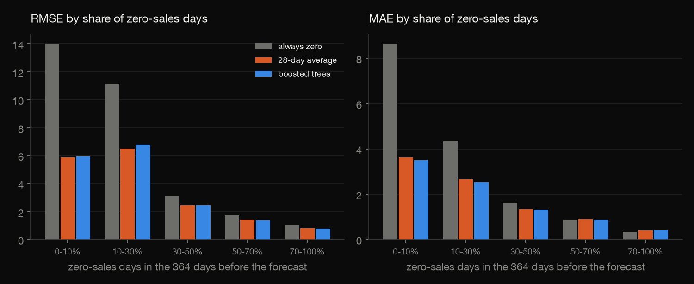
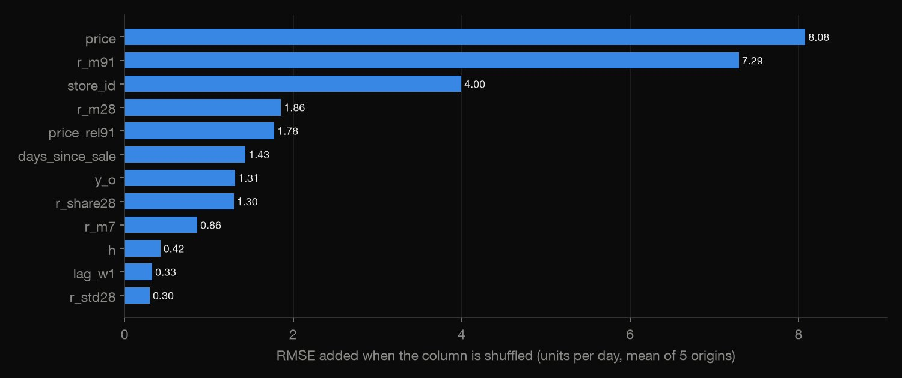

PySpark · Forecasting · 2026-10
Can boosted trees beat a 28-day average?
3,000 Walmart store-item series (M5), five 28-day forecasts each: boosted trees beat a 28-day average on the scaled, revenue-weighted error (0.821 vs 0.852, all 5 origins) and MAE, but not on RMSE (2.86 vs 2.79).

A 10% sample of items (300 of 3,049, by md5 order) in all 10 stores, not the full data; a bottom-level WRMSSE-style score, not the official 12-level WRMSSE; the last origin is the M5 validation window (public labels), and the feature design was changed once after seeing results, and one stock-out-affected series decides the RMSE verdict. Price, calendar and SNAP are treated as known in advance. Data: M5 Forecasting (Makridakis Open Forecasting Center) via Zenodo 12636070, CC BY 4.0.
01 — The problem
Stores plan stock weeks ahead, and a simple average of recent sales is hard to beat. Can a gradient-boosted model fed lags, rolling means, prices and the calendar beat a 28-day average at forecasting the next 28 days of unit sales, and which error measure should we believe when most days sell nothing?
The task follows DataCamp's "Building a Demand Forecasting Model" (PySpark: temporal features, forecasting at scale, e-commerce demand). The data is Walmart's M5 competition: 30,490 store-item series over 1,941 days, 60% of the item-days with zero sales.
02 — What I built
One question, five parts:
- The audit and the sample: Spark counts the zero days of all 30,490 series; 300 items by an md5 rule, all stores, are kept (3,000 series, 5.8 million rows).
- The features: Spark window functions: weekly lags, rolling means, days since last sale, price changes, calendar, events, SNAP, id codes, all anchored at the forecast origin.
- The test: five origins 28 days apart, never a random split, four benchmarks against a boosted model and a stale-input version of it.
- The scores: RMSE, MAE, a WRMSSE-style score, by forecast day and by intermittency, plus permutation importance.
- Check:
check.pyrecounts 443 numbers in plain Python from the raw CSVs, with no data or machine-learning library.
03 — How it was built
- 01
Download the sales, calendar and prices
Three files from the M5 record on Zenodo (CC BY 4.0), 325 MB once unzipped, fetched with a checksum and never committed.
URL = "https://zenodo.org/api/records/12636070/files/m5-forecasting-accuracy.zip/content" - 02
Stack the wide table in Spark
The sales file has one column per day. Spark reads it with a fixed schema and stacks the 1,941 day columns into one long table (series, day, units); the same stack gives the zero share of all 30,490 series and the sample of 3,000.
stack = "stack(%d, %s) as (d, y)" % (NDAYS, ", ".join(f"'{c}', {c}" for c in dcols)) - 03
Anchor every feature at the origin
A forecast made on day o for day t = o + h (h from 1 to 28) may use only sales up to o. The task table holds one row per (series, target day) with its origin, and the rolling statistics of day o are joined to it, so no feature can look past the origin. Calendar, events, SNAP and the target day's price are treated as known in advance.
tasks = tr.unionByName(va).withColumn("o", F.col("t") - F.col("h")) - 04
Score against the benchmarks
At each of five origins the benchmarks and the boosted model forecast the next 28 days. The WRMSSE-style score divides each series' squared error by its own one-day-difference error in the past and weights the result by its revenue in the last 28 days.
rmsse = np.sqrt(np.mean(e ** 2, axis=1)[valid] / s[valid]) - 05
Recount it without the libraries
check.pyre-derives the sample from the md5 rule, the zero audit over all 30,490 series, every benchmark forecast, scale, weight and score from the raw CSVs, and re-scores the stored model forecasts: 443 numbers to a relative tolerance of 1e-8. The model fit itself and the permutation importances cannot be recounted this way and are disclosed as such.s = sum((seg[i] - seg[i - 1]) ** 2 for i in range(1, len(seg))) / (len(seg) - 1) if len(seg) > 1 else 0.0
04 — Results
The sample. 3,000 series (300 items by an md5 rule, in all 10 stores) out of 30,490: the mean share of zero-sales days is 60.2% against 60.1% overall, and 66.1% against 67.3% of series are zero more than half the time. The sample is a little busier (1.46 units a day per series against 1.35).
Boosted trees win on the scaled, revenue-weighted error, not on RMSE. Mean of five origins; RMSE and MAE in units per day, WRMSSE-style unitless, lower is better. The boosted model's WRMSSE is 0.821 against 0.852 for the 28-day average (3.6% lower, and lower at 5 of 5 origins); its MAE is 2.4% lower (4 of 5 origins). Its RMSE is 2.86 against 2.79, ahead at 1 of 5 origins. "Old" is the same model fed only inputs that are 28 days old.
| Method | RMSE | MAE | WRMSSE |
|---|---|---|---|
| Last day | 3.70 | 1.406 | 1.168 |
| Last week | 3.12 | 1.246 | 1.090 |
| 28-day avg | 2.79 | 1.077 | 0.852 |
| Always 0 | 5.02 | 1.482 | 1.346 |
| Boosted, old | 7.72 | 1.204 | 0.860 |
| Boosted | 2.86 | 1.052 | 0.821 |

Five origins, no random splits. Each origin trains on the 730 days before it and forecasts the next 28; the last (d_1913) is the M5 validation window. The ranking of the four methods on the WRMSSE-style error is the same at every origin.

The first week's loss is one forecast. RMSE by forecast day (units per day; Avg = 28-day average, Old = the old-inputs model): the boosted model is worse than the 28-day average in days 1–7 and better afterwards. The cause is FOODS_3_090_CA_3 at d_1801: a best-seller (largest sale before the origin 763 units) that sold 1.7 a day over the 28 days before the origin and 85.0 a day in the window. The boosted model forecast up to 513 units a day (171 on average) and that one case holds 17.9% of its squared error.
| Days | Avg | Boosted | Old |
|---|---|---|---|
| 1–7 | 2.80 | 3.56 | 6.30 |
| 8–14 | 2.95 | 2.69 | 11.47 |
| 15–21 | 2.81 | 2.64 | 12.37 |
| 22–28 | 2.84 | 2.75 | 14.86 |

Without that one case. Removing it, the single worst forecast of the boosted model, from every method (of 15,000 series-origins) puts the boosted model ahead of the average in every band and pooled (2.66 against 2.75). I chose the case because it is the boosted model's worst, so the table flatters it; it shows how little the "not on RMSE" verdict rests on. "Old" is my first design, which could use only sales that were at least 28 days old so that every weekly lag was legal at every horizon: it lost to the average on all three scores (RMSE 7.72); the same series holds 85% of its squared error (a forecast of 2,362 units a day), but without it the pooled RMSE is still 4.57. I replaced it with inputs anchored at the forecast origin; nothing was capped or corrected afterwards.
| Days | Avg | Boosted | Old |
|---|---|---|---|
| 1–7 | 2.67 | 2.59 | 4.65 |
| 8–14 | 2.86 | 2.67 | 4.34 |
| 15–21 | 2.70 | 2.63 | 4.16 |
| 22–28 | 2.75 | 2.74 | 5.07 |
| All | 2.75 | 2.66 | 4.57 |
Intermittent demand: RMSE and MAE disagree. 42.5% of the series-origins sold nothing on at least 70% of the previous 364 days, and 25.0% on 50–70%. In those two groups always forecasting zero has the lowest MAE of all six methods, yet its RMSE is higher than the average's and the boosted model's. In the busiest group (under 10% zero days) the boosted MAE is 3.50 against 3.62 for the average. The table gives the MAE of always-zero and of the boosted model. MAE alone would pick "always zero" for most of these series. (Cases are series-origins: 3,000 series at 5 origins, minus one series not yet launched.)
| Zero days | Cases | Zero | Boosted |
|---|---|---|---|
| 0–10% | 587 | 8.642 | 3.499 |
| 10–30% | 1,770 | 4.361 | 2.523 |
| 30–50% | 2,511 | 1.624 | 1.310 |
| 50–70% | 3,757 | 0.869 | 0.875 |
| 70–100% | 6,374 | 0.329 | 0.420 |

RMSE rests on a few series. Of 15,000 series-origins, the worst 20 hold 42% of the 28-day average's squared error and 46% of the boosted model's (96% of the old-inputs model's). Pooled RMSE is 2.93 against 2.85; drop each method's own worst 20 and it is 2.15 against 2.18: the RMSE ranking flips on 0.13% of the series-origins.
| Method | Worst 20 | RMSE | Without |
|---|---|---|---|
| Last day | 40% | 3.78 | 2.93 |
| 28-day avg | 42% | 2.85 | 2.18 |
| Boosted | 46% | 2.93 | 2.15 |
| Boosted, old | 96% | 11.68 | 2.35 |
What the model uses. Permutation importance (RMSE added when a column is shuffled): the price level 8.08, the 91-day mean 7.29 and the store code 4.00, then the 28-day mean, the price against its own 91-day mean and the days since the last sale. No item code is given, so the price level and the store very probably stand in for the item and its volume; correlated inputs share their importance.

05 — What I'd do next
- Run it on all 30,490 series, where Spark's scale matters and the zeros are more numerous, and compare Spark MLlib's GBTRegressor with the scikit-learn model.
- Score the full 12-level WRMSSE and compare with the competition's leaderboard, including the hidden test period.
- Correct for stock-outs (zero sales while out of stock) and forecast a distribution rather than a single number, which suits intermittent demand better.